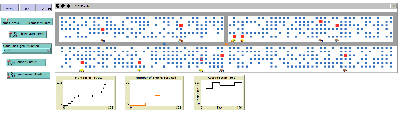

This page was automatically generated by NetLogo 5.0beta2.
The applet requires Java 5 or higher. Java must be enabled in your browser settings. Mac users must have Mac OS X 10.4 or higher. Windows and Linux users may obtain the latest Java from Sun's Java site.
In order for this to work, this file, your model file (port.nlogo), and the file NetLogoLite.jar must all be in the same directory. (You can copy NetLogoLite.jar from the directory where you installed NetLogo.)
On some systems, you can test the applet locally on your computer before uploading it to a web server. It doesn't work on all systems, though, so if it doesn't work from your hard drive, please try uploading it to a web server.
You don't need to include everything in this file in your page. If you want, you can just take the HTML code beginning with <applet> and ending with </applet>, and paste it into any HTML file you want. It's even OK to put multiple <applet> tags on a single page.
If NetLogoLite.jar and your model are in different directories, you must modify the archive= and value= lines in the HTML code to point to their actual locations. (For example, if you have multiple applets in different directories on the same web server, you may want to put a single copy of NetLogoLite.jar in one central place and change the archive= lines of all the HTML files to point to that one central copy. This will save disk space for you and download time for your users.)
powered by NetLogo
view/download model file: port.nlogo

A simulation of a container port. We model the movement of the cranes using various utility functions to determine what is the best behavior for the crane operators. The trucks have random arrival times. More details can be found at
Nathan Huynh and Jose M. Vidal. An Agent-Based Approach to Modeling Yard Cranes at Seaport Container Terminals. In Proceedings of the Symposium on Theory of Modeling and Simulation, 2010.
Jose M Vidal and Nathan Huynh. Building Agent-Based Models of Seaport Container Terminals. In Proceedings of 6th Workshop on Agents in Traffic and Transportation, 2010.
Jose M Vidal and Nathan Huynh
20110303
Last change.
breed [containers container]
containers-own [
z-cor ;0..3, the z-coordinate of this container
my-group ;my position
my-stack ;my position
my-row ;my position
my-truck ;the truck that wants me, or is carrying me
]
breed [cranes crane]
cranes-own [
goal; [#ticks-to-wait "goal-position" group stack] of the goal position for the crane, or ["deliver-containter" container-who], or []
]
breed [trucks truck]
trucks-own [
cargo ;the container that I want to get
my-group
my-stack
my-start-time ;creation time of each truck
waiting ; true if I am waiting outside the port, waiting to get in because there is another truck in my stack
]
;ticks: each tick is one second
globals [
crane-road-xcors ; list of the x-coordinates where the crane road travels N<->S
crane-road-ycors ; list of the y-coordinates where the crane road travels E<->W
num-trucks-serviced ; total number of trucks served
total-wait-time ; total wait time of all trucks that have been served
decommitment-penalty ;
ticks-to-rehandle
ticks-to-deliver
ticks-to-move
]
to setup
;; (for this model to work with NetLogo's new plotting features,
;; __clear-all-and-reset-ticks should be replaced with clear-all at
;; the beginning of your setup procedure and reset-ticks at the end
;; of the procedure.)
__clear-all-and-reset-ticks
;each tick is one second, below
set ticks-to-rehandle 40 ; number of ticks it takes for crane to move container from one place to another in the same stack.
set ticks-to-deliver 50 ;number of ticks it takes for crane to move container from stack to truck
set ticks-to-move 6 ;number of ticks it takes for the crane to move to an adjacent container
set decommitment-penalty 1000
set crane-road-xcors (list 0 41 82)
set crane-road-ycors (list 7 15)
ask patches [
set pcolor white]
;the road in which the crane travels is grey
ask patches with [member? pycor crane-road-ycors][
set pcolor grey]
ask patches with [(pycor >= item 0 crane-road-ycors and pycor <= item 1 crane-road-ycors) and (member? pxcor crane-road-xcors)][
set pcolor grey]
create-containers 1000 [
set z-cor 0
set shape "square"
set color blue
set size .6
set my-truck nobody
find-random-empty-position
]
create-cranes 1 [
set shape "arrow"
set heading 0
set color blue
set goal []
set-my-position position-in-yard 0 0 -1
]
create-cranes 1 [
set shape "arrow"
set heading 0
set color orange
set goal []
set-my-position position-in-yard 4 41 -1
]
end
to go
if ticks >= 14400 [ stop ] ; stop after 4800 ticks which is equal to 4 hours
let trucks-per-tick truck-arrival / 60 ;truck-arrival is in trucks/minute, convert to trucks/second since each tick is 1 second
create-trucks (random-poisson trucks-per-tick) [ ;Poisson arrival rate
set shape "truck"
set color brown
set waiting false
set my-start-time ticks
set cargo one-of containers with [my-truck = nobody]
if (cargo = nobody) [die stop] ;all stacks are full!!
ask cargo [
set color one-of (list red blue orange green)
]
goto-container
set my-group [my-group] of cargo
set my-stack [my-stack] of cargo
set label-color black
set heading 270
ifelse show-start-time?
[ set label my-start-time ] ;; the label is set to be the value of the my-start-time
[ set label "" ] ;; the label is set to an empty text value
if (any? other trucks-here) [ ;someone is already here, go to the waiting spot
setxy 0 16
set waiting true
]
ask cargo [
set color red
set size 1
set my-truck myself]
]
ask cranes [go-crane]
tick
set-current-plot "Number of Trucks"
plot count trucks
set-current-plot "Number of Trucks Serviced"
plot num-trucks-serviced
set-current-plot "Average Wait Time"
if num-trucks-serviced > 1 [plot total-wait-time / num-trucks-serviced]
end
to set-my-position [position-vector]
setxy (item 0 position-vector) (item 1 position-vector)
end
;Translates group#, stack#, row# pairs into x,y coordinates in the model
;Returns the position-vector [x y] where x,y are the patch coordinates
; of group,stack,row
; group: 0..3 is the group number
; stack: 0..39 is the stack number
; row: 0..5 is the row number
to-report position-in-yard [group stack row]
let y-pos int (group / 2)
ifelse (y-pos = 0) [
set y-pos 14
][
set y-pos 6
]
set y-pos (y-pos - row)
let x-pos ((group mod 2) * 41 + 1) + stack
report list x-pos y-pos
end
;========================================
;crane functions
;Gets called at every tick, makes the crane do what it needs to do.
;An opportunistic crane will re-evaluate its goal-position goal at every tick
;A non opportunistic crane picks a goal-position and sticks to it until it delivers the container to that truck.
to go-crane
if (not empty? goal and item 0 goal != 0)[ ;not time yet, countdown
set goal replace-item 0 goal (item 0 goal - 1)
stop ]
if (empty? goal or (opportunistic? and item 1 goal = "goal-position")) [;no goal position or opportunistic, set new goal
ifelse (any? trucks with [not waiting])[
let goalp []
if (crane-pick-goal-function = "random") [set goalp pick-goal-position]
if (crane-pick-goal-function = "longest") [set goalp pick-goal-position-longest]
if (crane-pick-goal-function = "closest") [set goalp pick-goal-position-closest]
if (crane-pick-goal-function = "closest-longest") [set goalp pick-goal-position-closest-longest]
if (crane-pick-goal-function = "eq-1") [
ifelse (semi-committed? and not empty? goal) [
set goalp pick-goal-position-eq-1-commited (list item 2 goal item 3 goal)
][
set goalp pick-goal-position-eq-1
]
]
if (crane-pick-goal-function = "eq-2") [set goalp pick-goal-position-eq-2]
ifelse (goalp != nobody) [ ; if a valid group and stack values are returned
set goal (sentence ticks-to-move "goal-position" item 0 goalp item 1 goalp)
][
set goal [] ; reset goal
stop ; crane stay put until next tick
]
][
stop
]
]
if (item 1 goal = "goal-position") [ ;move towards goal-position
let goal-position-xy position-in-yard (item 2 goal) (item 3 goal) -1
goto-position (item 2 goal) (item 3 goal)
if (not any? trucks-on (patch (item 0 goal-position-xy) (item 1 goal-position-xy - 7))) [ ;if there is no truck at the goal then reset goal
set goal []
stop
]
if (item 0 goal-position-xy = xcor and item 1 goal-position-xy = ycor) [;we are at the goal, next time deliver container
let the-truck trucks-in-this-stack
set goal (list ticks-to-deliver "deliver-container" (item 0 [cargo] of the-truck))
]
stop
]
if (item 1 goal = "deliver-container") [
if (item 2 goal = nobody) [ ;if another cranes just delivered this container
set goal []
stop
]
deliver-container (item 2 goal)
]
end
;moves the-container to the truck it belongs to, if the-container has no other containers on top of itself
;if the-container has another container on top then the top container is moved to the lowest pile in the stack
to deliver-container [the-container]
let pile-height max ([z-cor] of containers-on the-container)
ifelse ([z-cor] of the-container = pile-height) [ ;the-container is at the top
let the-truck trucks-in-this-stack
let the-containers-in-stack []
ask the-truck [
set the-containers-in-stack containers-in-stack
set total-wait-time total-wait-time + (ticks - my-start-time)
die]
set num-trucks-serviced num-trucks-serviced + 1
set goal []
ask the-container [die]
let containers-with-truck the-containers-in-stack with [my-truck != nobody]
if (any? containers-with-truck) [
ask (one-of [my-truck] of containers-with-truck) [ ;if any trucks are waiting for this spot, pick one and mobe him here
goto-container
set waiting false
]
]
stop
][ ;the-container is not at the top, move top container to smallest column in this stack
let the-container-column ([ycor] of the-container - ycor)
let other-columns remove the-container-column (list -1 -2 -3 -4 -5 -6)
let min-column-height min map [count containers-at 0 ?] other-columns
let min-columns filter [count containers-at 0 ? = min-column-height] other-columns
let destination one-of min-columns
;move the top container to destination
ask max-one-of (containers-at 0 the-container-column) [z-cor] [
move-to-position ([ycor] of myself + destination)
]
;to make the moving of each container take 3 steps uncomment the following line
set goal (list ticks-to-rehandle "deliver-container" the-container)
]
end
to-report trucks-in-this-stack
report trucks with [xcor = [xcor] of myself and ycor = ([ycor] of myself - 7)]
end
;Decide which truck to service
;returns the [group stack] of a random truck
to-report pick-goal-position
let chosen-truck one-of trucks with [not waiting]
if (chosen-truck = nobody) [
report nobody]
ask chosen-truck [set color yellow]
report [group-stack] of chosen-truck
end
;returns the [group stack] of the truck that has waited the longest
to-report pick-goal-position-longest
let chosen-truck min-one-of (trucks with [not waiting]) [my-start-time]
if (chosen-truck = nobody) [
report nobody]
ask chosen-truck [set color yellow]
report [group-stack] of chosen-truck
end
;returns the [group stack] of the truck that is closest (in terms of time, not distance) to crane
to-report pick-goal-position-closest
let chosen-truck min-one-of (trucks with [not waiting]) [distance-to-crane myself]
if (chosen-truck = nobody) [
report nobody]
ask chosen-truck [set color yellow]
report [group-stack] of chosen-truck
end
;returns the [group stack] of the truck that are among the closest to crane, but has longest waiting time
to-report pick-goal-position-closest-longest
let range 40 ; range of search area. experimental variable. will it have an affect on the truck wait time?
let trucks-in-range trucks with [not waiting and distance-to-crane myself < range]
let chosen-truck min-one-of trucks-in-range [my-start-time]
if (chosen-truck = nobody) [
report nobody]
ask chosen-truck [set color yellow]
report [group-stack] of chosen-truck
end
;Pick the truck that maximizes utility-eq-1
to-report pick-goal-position-eq-1
let chosen-truck max-one-of (trucks with [not waiting]) [utility-eq-1 myself]
if (chosen-truck = nobody) [
report nobody]
ask chosen-truck [set color yellow]
report [group-stack] of chosen-truck
end
;Pick the truck that maximizes utility-eq-1
; but only if its utility is higher than the one at current-goal by at least decommitment-penalty
to-report pick-goal-position-eq-1-commited [current-goal]
let chosen-truck max-one-of (trucks with [not waiting]) [utility-eq-1 myself]
if (chosen-truck = nobody) [
report current-goal]
let utility-of-chosen-truck [utility-eq-1 myself] of chosen-truck
let current-truck one-of trucks with [my-group = item 0 current-goal and my-stack = item 1 current-goal]
if (current-truck = nobody) [
report [group-stack] of chosen-truck]
let utility-of-current-truck [utility-eq-1 myself] of current-truck
ask current-truck [set color brown]
ifelse (utility-of-chosen-truck > utility-of-current-truck + decommitment-penalty) [ ;is the new goal that much better than the current?
ask chosen-truck [set color yellow]
report [group-stack] of chosen-truck
][
ask current-truck [set color yellow]
report current-goal
]
end
;Pick the truck that maximizes utility-eq-2
to-report pick-goal-position-eq-2
let chosen-truck max-one-of (trucks with [not waiting]) [utility-eq-2 myself]
if (chosen-truck = nobody) [
report nobody]
ask chosen-truck [set color yellow]
report [group-stack] of chosen-truck
end
;Returns a list of the patch coords the crane must follow to go from xstart,ystart to xend,yend
;Assumes that either xstart=xend or ystart=yend
;The return path omits xstart,ystart but includes xend,yend
to-report make-path [xstart ystart xend yend]
if (xstart = xend) [
let increment ifelse-value (ystart > yend) [1][-1]
let result []
let p yend
repeat abs (ystart - yend) [
set result fput (list xstart p) result
set p p + increment
]
report result
]
if (ystart = yend) [
let increment ifelse-value (xstart > xend) [1][-1]
let result []
let p xend
repeat abs (xstart - xend) [
set result fput (list p ystart) result
set p p + increment
]
report result
]
;both x & y coords are different
show (word "ERROR: make-path:" xstart "," ystart " " xend "," yend)
report []
end
;reports the shortest path from our current xcor,ycor to goal-x,goal-y
;returns list [[x1 y1][x2 y2]....] where xi yi are the positions (patch coordinates) the crane must follow, in order.
to-report path-to-xy [goal-x goal-y]
if (ycor = goal-y) [;I am in the same W<->E as the goal
report make-path xcor ycor goal-x goal-y
]
if (member? xcor crane-road-xcors) [ ; I am traveling N<->S
report (sentence (make-path xcor ycor xcor goal-y) (make-path xcor goal-y goal-x goal-y))
]
;I am not in the same ycor as the goal, find shortest route
let all-distances map [(abs (xcor - ?)) + abs (goal-x - ?)] crane-road-xcors
let best-crossroad item (position (min all-distances) all-distances) crane-road-xcors
let other-ycor first filter [? != ycor] crane-road-ycors
report (sentence (make-path xcor ycor best-crossroad ycor) (make-path best-crossroad ycor best-crossroad other-ycor) (make-path best-crossroad other-ycor goal-x goal-y))
end
to-report path-to-group-stack [group stack]
let goal-pos position-in-yard group stack -1
let goal-x first goal-pos
let goal-y item 1 goal-pos
report path-to-xy goal-x goal-y
end
to-report path-to-truck [the-truck]
report path-to-xy [xcor] of the-truck [ycor + 7] of the-truck
end
;returns the length of the minimum path to goal-x,goal-y. This function is similar to path-to-xy but does not create the path, so its faster.
to-report distance-to-xy [goal-x goal-y]
if (ycor = goal-y) [;I am in the same W<->E as the goal
report abs (xcor - goal-x)
]
if (member? xcor crane-road-xcors) [ ; I am traveling N<->S
report abs (ycor - goal-y) + abs (xcor - goal-x)
]
;I am not in the same ycor as the goal, find shortest route
let all-distances map [(abs (xcor - ?)) + abs (goal-x - ?)] crane-road-xcors
let best-crossroad item (position (min all-distances) all-distances) crane-road-xcors
let other-ycor first filter [? != ycor] crane-road-ycors
report abs (xcor - best-crossroad) + abs (ycor - other-ycor) + abs (best-crossroad - goal-x)
end
to-report distance-to-group-stack [group stack]
let goal-pos position-in-yard group stack -1
report distance-to-xy (first goal-pos) (item 1 goal-pos)
end
to-report distance-to-truck [the-truck]
report distance-to-xy [xcor] of the-truck [ycor + 7] of the-truck
end
;Moves at most one step towards group,stack using the shortest route.
;But, if there is a crane in the position that I want to go then I say put
to goto-position [group stack]
let path path-to-group-stack group stack
if (length path = 0) [stop]
let next first path
set heading towardsxy (first next) (item 1 next)
if (not any? cranes-on patch-ahead 1) [
forward 1
]
end
;reports true if the crane does not need to change its heading to follow path
to-report path-in-heading? [path]
if (length path = 0) [ ;if path is empty then we don't need to change heading
report true
]
let pos first path
report (heading = towardsxy (first pos) (item 1 pos))
end
;===========================================================
;container functions
;Tries random positions until it finds one where the container can be placed, the the container is placed there.
to find-random-empty-position
loop [
set my-group random 4 ;a group is the set of 40 stacks
set my-stack random 40;
set my-row random 6
set-my-position (position-in-yard my-group my-stack my-row)
let others-here other turtles-here
if ((not any? others-here) or count other turtles-here < 4)[ ;position works, put me here
ifelse (not any? others-here)[
set z-cor 0
][
set z-cor 1 + max [z-cor] of other containers-here
]
stop
]
]
end
;container moves to ypos, resets his z-cor to be at the top of the new column
to move-to-position [ypos]
set my-row my-row + (ycor - ypos)
set ycor ypos
ifelse (any? other containers-here) [
set z-cor 1 + max [z-cor] of other containers-here
][
set z-cor 0
]
end
;===========================================================
;truck functions
;move the truck to the position where it can pick up cargo (container)
to goto-container
setxy ([xcor] of cargo) ([ycor] of cargo)
set ycor (ycor - (6 - [my-row] of cargo))
end
;return an agentset of all the containers in the stack above me
to-report containers-in-stack
report (turtle-set containers-at 0 1 containers-at 0 2 containers-at 0 3 containers-at 0 4 containers-at 0 5 containers-at 0 6)
end
to-report path-to-crane [the-crane]
report [path-to-truck myself] of the-crane
end
to-report distance-to-crane [the-crane]
report [distance-to-truck myself] of the-crane
end
to-report group-stack
report (list my-group my-stack)
end
;utility functions: these are truck functions. Each one takes the-crane as argument and returns the utility to the crane for delivering a container to this truck
;utility eq-1: distance-based utility. The further a truck, the lower its utility.
;utility = 0 - distance(the-crane) - 1000 (if some other crane is on the path to the-crane) - 1000 (if a turn is required)
; "turn is required" means that the current heading of the crane is NOT the same heading required for the first move in path-to-the-crane
to-report utility-eq-1 [the-crane]
let path-to-the-crane path-to-crane the-crane
let other-cranes-coords [(list xcor ycor)] of (cranes with [self != the-crane])
let other-crane-in-path? reduce [?1 or ?2] (map [member? ? path-to-the-crane] other-cranes-coords)
let turn-required? false
if ([ycor] of the-crane != [ycor + 7] of self) [set turn-required? true]
let keep-heading? [path-in-heading? path-to-the-crane] of the-crane
report 0 - distance-to-crane the-crane - ifelse-value (other-crane-in-path?)[10000][0] - ifelse-value (turn-required?)[1000][0] - ifelse-value (keep-heading?)[0][1000]
end
;utility eq-2: time-based utility. The longer a truck waits, the higher its utility.
;utility = truck wait time - 1000 (if some other crane is on the path to the-crane) - 1000 (if a turn is required)
to-report utility-eq-2 [the-crane]
let path-to-the-crane path-to-crane the-crane
let other-cranes-coords [(list xcor ycor)] of (cranes with [self != the-crane])
let other-crane-in-path? reduce [?1 or ?2] (map [member? ? path-to-the-crane] other-cranes-coords)
let turn-required? false
if ([ycor] of the-crane != [ycor + 7] of self) [set turn-required? true]
let reverse-heading? false
if (heading = 90 and (xcor - [xcor] of the-crane) < 0) [set reverse-heading? true]
if (heading = 270 and (xcor - [xcor] of the-crane) > 0) [set reverse-heading? true]
report (ticks - my-start-time) - ifelse-value (other-crane-in-path?)[1000][0] - ifelse-value (turn-required?)[1000][0] - ifelse-value (reverse-heading?)[1000][0]
end